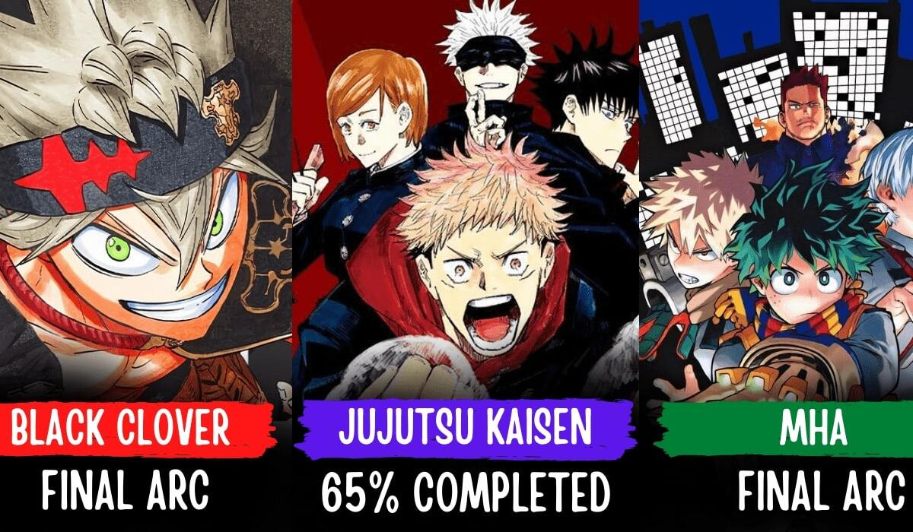

As anime has become a part of many peoples livese of many ages in this current era in time and is exposed to audiences around the world more and more via its presence on streaming sites such as Crunchyroll, Amazon Anime, Funimation, Netflix and many others. Not only that but, anime is also presented via fan animations, clip edits made of scenes in shows and even made into live action movies such as Death Note, Dragonball Evolution, Assassination Classroom, Alita: Battle Angel and some others.
In the past animation studios would work on one animating a series one by one, however as we're in the digital era where technology is evolving every day, technology has made it easier to create storyboards, draw, copy and colour scenes making them be able to have different groups work on different shows being animated.